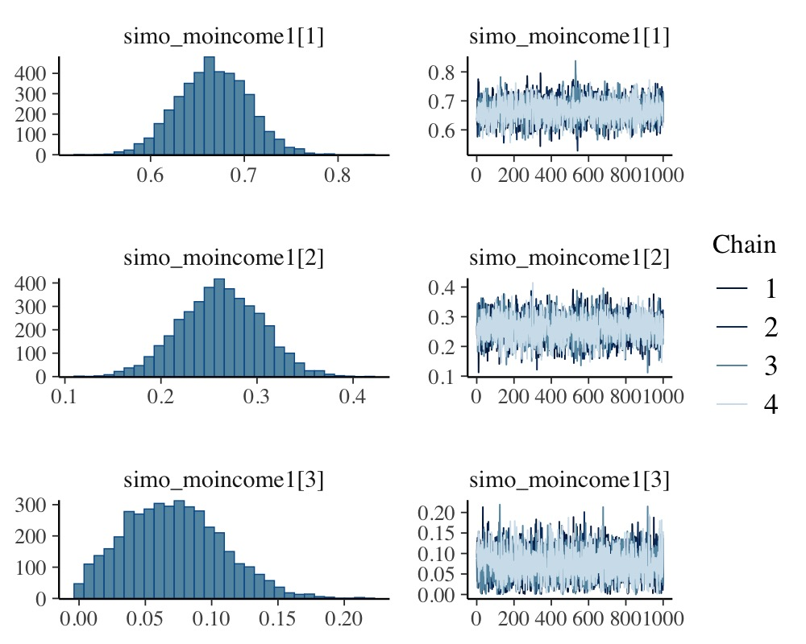
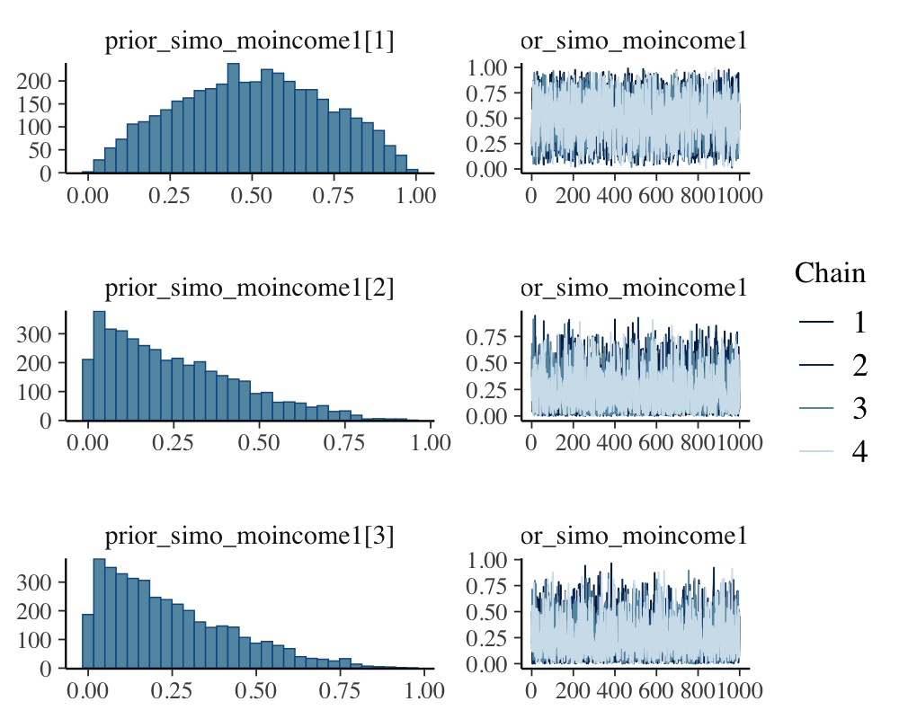
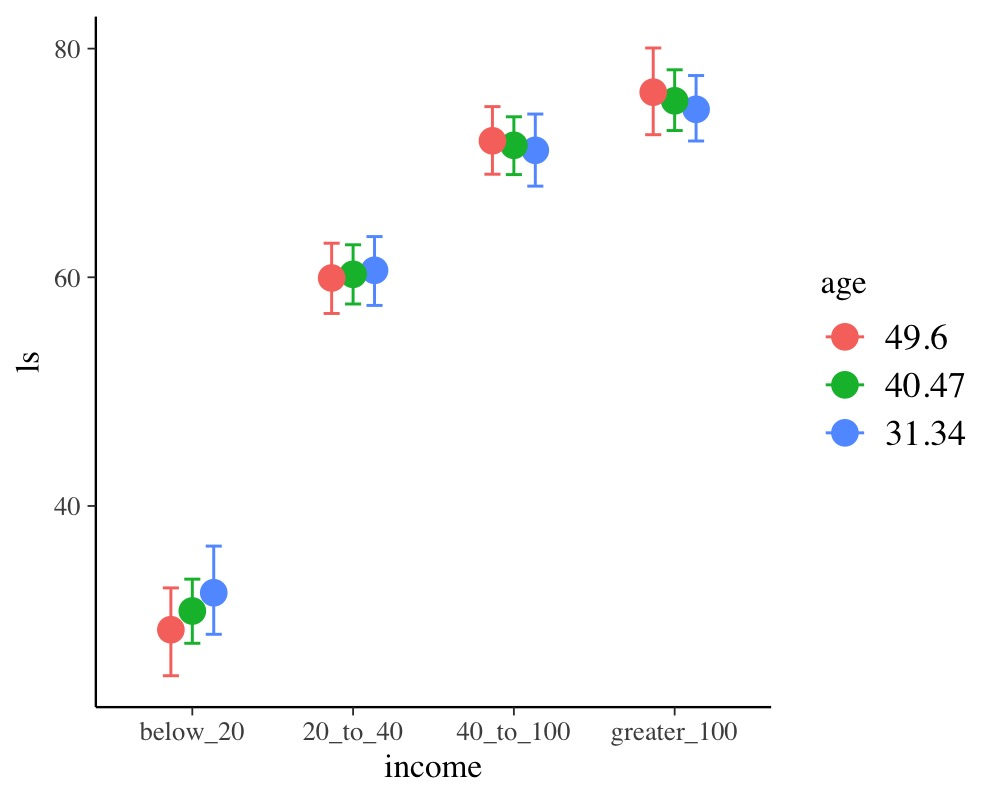

Estimating Monotonic Effects with brms
Paul Bürkner
2019-02-19
Source:vignettes/brms_monotonic.Rmd
brms_monotonic.RmdIntroduction
This vignette is about monotonic effects, a special way of handling discrete predictors that are on an ordinal or higher scale (Bürkner & Charpentier, in review). A predictor, which we want to model as monotonic (i.e., having a monotonically increasing or decreasing relationship with the response), must either be integer valued or an ordered factor. As opposed to a continuous predictor, predictor categories (or integers) are not assumend to be equidistant with respect to their effect on the response variable. Instead, the distance between adjacent predictor categories (or integers) is estimated from the data and may vary across categories. This is realized by parameterizing as follows: One parameter, \(b\), takes care of the direction and size of the effect similar to an ordinary regression parameter, while an additional parameter vector, \(\zeta\), estimates the normalized distances between consecutive predictor categories. For a single monotonic predictor, \(x\), the linear predictor term of observation \(n\) looks as follows:
\[\eta_n = b \sum_{i = 1}^{x_n} \zeta_i\]
The parameter \(b\) can take on any real value, while \(\zeta\) is a simplex, which means that is it satisfies \(\zeta_i \in [0,1]\) and \(\sum_{i = 1}^C \zeta_i = 1\) with \(C\) being the number of categories (or highest integer in the data).
A Simple Monotonic Model
A main application of monotonic effects are ordinal predictors that can be modeled this way without falsely treating them either as continuous or as unordered categorical predictors. In Psychology, for instance, this kind of data is omnipresent in the form of Likert scale items, which are often treated as being continuous for convenience without ever testing this assumption. As an example, suppose we are interested in the relationship of yearly income (in $) and life satisfaction measured on an arbitrary scale from 0 to 100. Usually, people are not asked for the exact income. Instead, they are asked to rank themselves in one of certain classes, say: ‘below 20k’, ‘between 20k and 40k’, ‘between 40k and 100k’ and ‘above 100k’. We use some simulated data for illustration purposes.
income_options <- c("below_20", "20_to_40", "40_to_100", "greater_100")
income <- factor(sample(income_options, 100, TRUE),
levels = income_options, ordered = TRUE)
mean_ls <- c(30, 60, 70, 75)
ls <- mean_ls[income] + rnorm(100, sd = 7)
dat <- data.frame(income, ls)We now proceed with analyzing the data modeling income as a monotonic effect.
The summary methods yield
Family: gaussian
Links: mu = identity; sigma = identity
Formula: ls ~ mo(income)
Data: dat (Number of observations: 100)
Samples: 4 chains, each with iter = 2000; warmup = 1000; thin = 1;
total post-warmup samples = 4000
Population-Level Effects:
Estimate Est.Error l-95% CI u-95% CI Eff.Sample Rhat
Intercept 29.61 1.72 26.31 33.06 2098 1.00
moincome 47.02 2.16 42.67 51.20 2131 1.00
Simplex Parameters:
Estimate Est.Error l-95% CI u-95% CI Eff.Sample Rhat
moincome1[1] 0.67 0.04 0.60 0.74 3974 1.00
moincome1[2] 0.17 0.04 0.09 0.25 3958 1.00
moincome1[3] 0.16 0.04 0.09 0.23 4258 1.00
Family Specific Parameters:
Estimate Est.Error l-95% CI u-95% CI Eff.Sample Rhat
sigma 7.00 0.51 6.08 8.14 3547 1.00
Samples were drawn using sampling(NUTS). For each parameter, Eff.Sample
is a crude measure of effective sample size, and Rhat is the potential
scale reduction factor on split chains (at convergence, Rhat = 1).

The distributions of the simplex parameter of income, as shown in the plot method, demonstrate that the largest difference (about 70% of the difference between minimum and maximum category) is between the first two categories.
Now, let’s compare of monotonic model with two common alternative models. (a) Assume income to be continuous:
Family: gaussian
Links: mu = identity; sigma = identity
Formula: ls ~ income_num
Data: dat (Number of observations: 100)
Samples: 4 chains, each with iter = 2000; warmup = 1000; thin = 1;
total post-warmup samples = 4000
Population-Level Effects:
Estimate Est.Error l-95% CI u-95% CI Eff.Sample Rhat
Intercept 24.92 2.51 19.97 29.79 4249 1.00
income_num 14.01 0.88 12.32 15.80 4124 1.00
Family Specific Parameters:
Estimate Est.Error l-95% CI u-95% CI Eff.Sample Rhat
sigma 9.43 0.68 8.19 10.88 3549 1.00
Samples were drawn using sampling(NUTS). For each parameter, Eff.Sample
is a crude measure of effective sample size, and Rhat is the potential
scale reduction factor on split chains (at convergence, Rhat = 1).or (b) Assume income to be an unordered factor:
Family: gaussian
Links: mu = identity; sigma = identity
Formula: ls ~ income
Data: dat (Number of observations: 100)
Samples: 4 chains, each with iter = 2000; warmup = 1000; thin = 1;
total post-warmup samples = 4000
Population-Level Effects:
Estimate Est.Error l-95% CI u-95% CI Eff.Sample Rhat
Intercept 29.33 1.72 25.97 32.70 2237 1.00
income2 31.82 2.20 27.48 36.05 2588 1.00
income3 39.75 2.13 35.59 43.97 2463 1.00
income4 47.38 2.19 43.13 51.70 2567 1.00
Family Specific Parameters:
Estimate Est.Error l-95% CI u-95% CI Eff.Sample Rhat
sigma 6.98 0.51 6.07 8.07 3631 1.00
Samples were drawn using sampling(NUTS). For each parameter, Eff.Sample
is a crude measure of effective sample size, and Rhat is the potential
scale reduction factor on split chains (at convergence, Rhat = 1).We can easily compare the fit of the three models using leave-one-out cross-validation.
LOOIC SE
fit1 676.53 14.20
fit2 734.14 12.14
fit3 676.31 14.29
fit1 - fit2 -57.61 12.85
fit1 - fit3 0.22 0.35
fit2 - fit3 57.83 13.04The monotonic model fits better than the continuous model, which is not surprising given that the relationship between income and ls is non-linear. The monotonic and the unorderd factor model have almost identical fit in this example, but this may not be the case for other data sets.
Setting Prior Distributions
In the previous monotonic model, we have implicitly assumed that all differences between adjacent categories were a-priori the same, or formulated correctly, had the same prior distribution. In the following, we want to show how to change this assumption. The canonical prior distribution of a simplex parameter is the Dirchlet distribution, a multivariate generalization of the beta distribution. It is non-zero for all valid simplexes (i.e., \(\zeta_i \in [0,1]\) and \(\sum_{i = 1}^K \zeta_i = 1\)) and zero otherwise. The Dirichlet prior has a single parameter \(\alpha\) of the same length as \(\zeta\). The higher \(\alpha_i\) the higher the a-priori probability of higher values of \(\zeta_i\). Suppose that, before looking at the data, we expected that the same amount of additional money matters more for people who generally have less money. This translates into a higher a-priori values of \(\zeta_1\) (difference between ‘below_20’ and ‘20_to_40’) and hence into higher values of \(\alpha_1\). We choose \(\alpha_1 = 2\) and \(\alpha_2 = \alpha_3 = 1\), the latter being the default value of \(\alpha\). To fit the model we write:
prior4 <- prior(dirichlet(c(2, 1, 1)), class = "simo", coef = "moincome1")
fit4 <- brm(ls ~ mo(income), data = dat,
prior = prior4, sample_prior = TRUE)The 1 at the end of "moincome1" may appear strange when first working with monotonic effects. However, it is necessary as one monotonic term may be associated with multiple simplex parameters, if interactions of multiple monotonic variables are included in the model.
Family: gaussian
Links: mu = identity; sigma = identity
Formula: ls ~ mo(income)
Data: dat (Number of observations: 100)
Samples: 4 chains, each with iter = 2000; warmup = 1000; thin = 1;
total post-warmup samples = 4000
Population-Level Effects:
Estimate Est.Error l-95% CI u-95% CI Eff.Sample Rhat
Intercept 29.59 1.70 26.25 32.91 2992 1.00
moincome 47.03 2.13 42.81 51.17 2976 1.00
Simplex Parameters:
Estimate Est.Error l-95% CI u-95% CI Eff.Sample Rhat
moincome1[1] 0.67 0.04 0.60 0.74 3657 1.00
moincome1[2] 0.17 0.04 0.09 0.25 3854 1.00
moincome1[3] 0.16 0.04 0.09 0.23 4256 1.00
Family Specific Parameters:
Estimate Est.Error l-95% CI u-95% CI Eff.Sample Rhat
sigma 6.99 0.51 6.08 8.07 3845 1.00
Samples were drawn using sampling(NUTS). For each parameter, Eff.Sample
is a crude measure of effective sample size, and Rhat is the potential
scale reduction factor on split chains (at convergence, Rhat = 1).We have used sample_prior = TRUE to also obtain samples from the prior distribution of simo_moincome1 so that we can visualized it.

As is visible in the plots, simo_moincome1[1] was a-priori on average twice as high as simo_moincome1[2] and simo_moincome1[3] as a result of setting \(\alpha_1\) to 2.
Modeling interactions of monotonic variables
Suppose, we have additionally asked participants for their age.
We are not only interested in the main effect of age but also in the interaction of income and age. Interactions with monotonic variables can be specified in the usual way using the * operator:
Family: gaussian
Links: mu = identity; sigma = identity
Formula: ls ~ mo(income) * age
Data: dat (Number of observations: 100)
Samples: 4 chains, each with iter = 2000; warmup = 1000; thin = 1;
total post-warmup samples = 4000
Population-Level Effects:
Estimate Est.Error l-95% CI u-95% CI Eff.Sample Rhat
Intercept 34.03 6.24 22.47 47.56 1474 1.00
age -0.11 0.15 -0.45 0.17 1380 1.00
moincome 38.56 7.48 23.21 53.53 1319 1.00
moincome:age 0.21 0.18 -0.14 0.58 1250 1.00
Simplex Parameters:
Estimate Est.Error l-95% CI u-95% CI Eff.Sample Rhat
moincome1[1] 0.71 0.08 0.55 0.88 1698 1.00
moincome1[2] 0.15 0.07 0.02 0.28 2003 1.00
moincome1[3] 0.13 0.07 0.01 0.26 2069 1.00
moincome:age1[1] 0.41 0.24 0.02 0.87 2009 1.00
moincome:age1[2] 0.27 0.20 0.01 0.75 2530 1.00
moincome:age1[3] 0.32 0.21 0.02 0.80 2122 1.00
Family Specific Parameters:
Estimate Est.Error l-95% CI u-95% CI Eff.Sample Rhat
sigma 7.01 0.51 6.10 8.09 3104 1.00
Samples were drawn using sampling(NUTS). For each parameter, Eff.Sample
is a crude measure of effective sample size, and Rhat is the potential
scale reduction factor on split chains (at convergence, Rhat = 1).
Modelling Monotonic Group-Level Effects
Suppose that the 100 people in our sample data were drawn from 10 different cities; 10 people per city. Thus, we add an identifier for city to the data and add some city-related variation to ls.
dat$city <- rep(1:10, each = 10)
var_city <- rnorm(10, sd = 10)
dat$ls <- dat$ls + var_city[dat$city]With the following code, we fit a multilevel model assuming the intercept and the effect of income to vary by city:
Family: gaussian
Links: mu = identity; sigma = identity
Formula: ls ~ mo(income) * age + (mo(income) | city)
Data: dat (Number of observations: 100)
Samples: 4 chains, each with iter = 2000; warmup = 1000; thin = 1;
total post-warmup samples = 4000
Group-Level Effects:
~city (Number of levels: 10)
Estimate Est.Error l-95% CI u-95% CI Eff.Sample Rhat
sd(Intercept) 9.52 3.28 4.37 17.35 2190 1.00
sd(moincome) 5.30 3.21 0.46 12.62 1539 1.00
cor(Intercept,moincome) 0.26 0.47 -0.72 0.96 2879 1.00
Population-Level Effects:
Estimate Est.Error l-95% CI u-95% CI Eff.Sample Rhat
Intercept 36.73 7.44 22.80 52.21 1433 1.00
age -0.18 0.17 -0.55 0.11 1503 1.00
moincome 36.12 8.21 18.59 51.00 1446 1.00
moincome:age 0.27 0.19 -0.08 0.69 1383 1.00
Simplex Parameters:
Estimate Est.Error l-95% CI u-95% CI Eff.Sample Rhat
moincome1[1] 0.71 0.09 0.51 0.89 2341 1.00
moincome1[2] 0.16 0.08 0.02 0.33 2889 1.00
moincome1[3] 0.13 0.07 0.01 0.28 3199 1.00
moincome:age1[1] 0.44 0.24 0.02 0.87 2829 1.00
moincome:age1[2] 0.26 0.20 0.01 0.75 3164 1.00
moincome:age1[3] 0.30 0.20 0.02 0.78 3449 1.00
Family Specific Parameters:
Estimate Est.Error l-95% CI u-95% CI Eff.Sample Rhat
sigma 6.88 0.55 5.93 8.05 3774 1.00
Samples were drawn using sampling(NUTS). For each parameter, Eff.Sample
is a crude measure of effective sample size, and Rhat is the potential
scale reduction factor on split chains (at convergence, Rhat = 1).reveals that the effect of income varies only little across cities. For the present data, this is not overly surprising given that, in the data simulations, we assumed income to have the same effect across cities.
References
Bürkner P. C. & Charpentier, E. (in review). Monotonic Effects: A Principled Approach for Including Ordinal Predictors in Regression Models. PsyArXiv preprint.